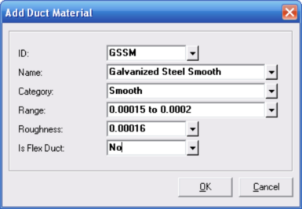

Add Duct Material, Edit Duct Material (Bill of Materials Parts Database Window) |
  
|
Add Duct Material, Edit Duct Material (Bill of Materials Parts Database Window) |
|
To add a duct material, follow these steps:
1.Open the Project Bill of Materials window, if it is not already open (click the menu "Project | Bill of Materials").
2.Click the menu "Bill of Materials - General | Parts Database."
3.From the Bill of Materials Parts Database window click the menu "Lists | Duct Materials."
4.On the Edit Duct Materials dialog, click the Add menu.
5.Enter something in each of the inputs, as shown below, and click OK. Your new duct material will now be available in any dropdown help window for duct material or roughness factor.
To edit an existing material (if not read-only), click the Edit menu on the Edit Duct Materials dialog.

ID: Specifies a short, unique ID that the program will use to identify the material. When editing an existing material this input will be grayed out and disabled.
Name: Specifies the name that you want to use to fully describe the material.
Category: Used only in the dropdown help when selecting a duct material elsewhere in the program, the category describes the roughness of the material.
Range: Also only used in the dropdown help when selecting a duct material elsewhere in the program, the range describes the minimum and maximum roughness factor found in the material.
Roughness: Specifies the actual roughness factor of the material. This value will be used in the duct sizing and pressure loss calculations.
Is Flex Duct: Specifies whether the program should consider the material flex duct or not. This option determines certain operations by Manual D Ductsize related to Bill of Materials. For example, the material chosen for a fitting part can be dependent on whether the duct is flex duct or not.